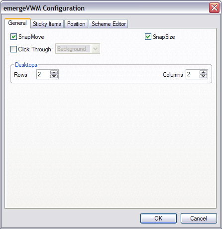
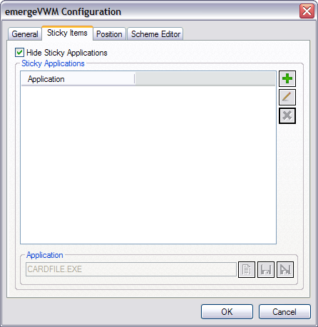
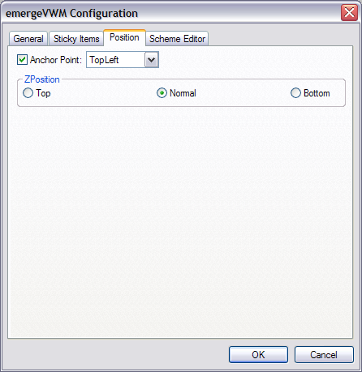

| About |
emergeVWM is Emerge Desktop's "Virtual Window Manager" applet. It allows the user to switch monitor views between different virtual "desktops", and displays a grid of corresponding mini-windows in a movable and resizeable window.
| Configuration |
emergeVWM is configured by pressing the Ctrl key and right-clicking on the emergeVWM window. This opens the configuration menu:
About displays the module's author and version and the current scheme's path and filename.
Load Scheme allows the user to browse and select a Scheme File.
Reload Current Scheme allows to reload the current scheme after editing.
Configure displays the emergeLauncher configuration dialog box.
Exit closes the module. It can be restarted by highlighting it and clicking on the Start  button in the Launch Applet dialog box (see emergeCore).
button in the Launch Applet dialog box (see emergeCore).
After selecting Configure, the configuration dialog box opens. The first tab is General:

SnapMove makes the window snap to the edges of other applets' windows or the edges of the screen when moving it.
SnapSize makes the window snap to the edges of other applets' windows or the edges of the screen when changing its size.
Click Through allows clicking "through" the window (i.e. allows clicking on whatever is behind it).
Click Through has two modes: Full (the whole window is "transparent" to mouse input), or Background (only the background area is "transparent" but the user can click on the icons in emergeTray, emergeTasks, emergeLauncher, the text in emergeCommand, emergePower, the active mini-window in emergeVWM, the graphs in emergeSysMon).
Important notes: 1) Full Click Through works for any level of opacity, from opaque to fully transparent; 2) Background Click Through automatically sets the background to transparent but does not change the scheme, this is a known limitation; 3) To manipulate an applet set on Full Click Through, the user must press the Shift key: Shift+Ctrl+LeftClick to move the applet, Shift+Ctrl+RightClick to get the configuration menu and Shift+Alt to resize the applet.
The number of Virtual Desktops (or Windows) is defined by the number of Rows and Columns defined. The total number of virtual desktops is given by the number of rows times the number of columns (e.g. if the user sets both to 3, she will have 9 Virtual Desktops)
The configuration dialog box's second tab is Sticky Items:

Sticky Applications are programs which have been set to be displayed in each Virtual Desktop.
Note that in the VWM window, they show only on the active one.
Hide Sticky Applications hides the items in the Sticky Applications window from view in the VWM window, as the user may not find necessary to see these always-present items in the VWM window.
To Add  a new Sticky Application, the user Browses to an Application file
a new Sticky Application, the user Browses to an Application file  , or just types in that window the name of the executable (e.g. Calc for the Calculator).
, or just types in that window the name of the executable (e.g. Calc for the Calculator).
The user then clicks on Save  (or Discard
(or Discard  to start over). Pressing the OK button saves the current settings and closes the configuration dialog box.
to start over). Pressing the OK button saves the current settings and closes the configuration dialog box.
Sticky Applications can be deleted  after hightlighting them.
after hightlighting them.
After the user adds, deletes or modifies incorrectly an item, she can undo changes by clicking the Cancel button. A dialog box opens asking for confirmation to close the configuration dialog box without saving the changes made.
The configuration dialog box's third tab is Position:

Anchor Point gives the choice of anchoring the window to the monitor's Top Left, Top Center, Top Right, Middle Left, Middle Center, Middle Right, Bottom Left, Bottom Center, or Bottom Right.
ZPosition defines the relative position of the window in the Z axis (i.e. from the screen to the user) and can be set to always on the Top, Normal (behaves as a regular program window), or always at the Bottom.
Note that for multi-monitor setups, each emergeVWM desktop shows all the monitors in each mini window.
| Usage |
Left-clicking on a "desktop" (i.e. Virtual Window) in the VWM window will switch the monitor view to that desktop.
Selecting a task from emergeTasks or via Alt-Tab switches to the desktop where the task resides, restores the task (if minimized), and moves the window to the foreground.
Moving an application between desktops can be done by left-clicking it in the VWM window and dragging it to the desired desktop.
Alternatively, the user can set hotkeys or type in the emergeCommand window to move from one desktop to an other. The Internal Commands available for this purpose are: VWM_1, VWM_2, VWM_3, VWM_4, VWM_5, VWM_6, VWM_7, VWM_8, VWM_9, VWMLeft, VWMRight, VWMUp and VWMDown.
The user can also gather all currently running tasks on the active desktop by executing the command VWMGather.
An other way to have an application reside on a specific desktop is to start it while on that desktop.
Double left clicking on the VWM window opens up the Display Properties dialog box.
To move the window, the user must press the Ctrl key, left-click on the window, and drag it to another location.
To resize the window, the user must press the Alt key, left-click on one edge of the window, and drag it to a new size.
The window position and size are stored in the applet's xml file, which is located in the User Profile folder under "\Application Data\Emerge Desktop\themes", in a subfolder with the same name as the current Theme. See Theme Manager for more details.